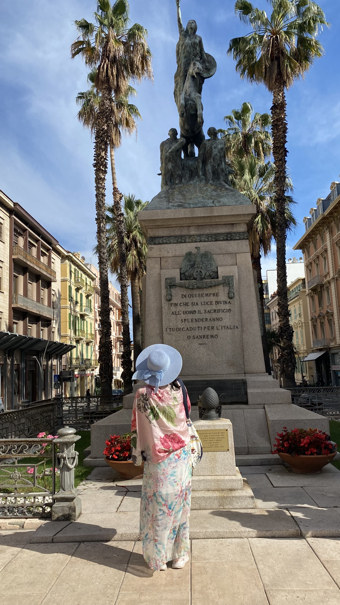

Exploring Sanremo: A 2-Day Guide to Italy’s City of Flowers
Discover the best of Sanremo with this easy-to-follow itinerary!
Introduction
Sanremo is a charming city located on the Italian Riviera, known for its beautiful beaches, historic architecture, and vibrant culture. The city is famous for its annual music festival, the Sanremo Festival, which attracts musicians and fans from around the world. Sanremo is also renowned for its stunning gardens, including the Villa Nobel and the Giardini Regina Elena. In this 2-day guide, we’ll explore the best of Sanremo, from its historic old town to its picturesque coastline.

Day 1: Discover Sanremo’s Historic Charm
- Morning: Wander through La Pigna and visit the Madonna della Costa Sanctuary.
- Afternoon: Tour Villa Nobel and its peaceful gardens.
- Evening: Experience the glamour of the Sanremo Casino and enjoy fine dining.
Day 2: Coastal Beauty and Cultural Highlights
- Morning: Bike along the Riviera dei Fiori and relax at the beaches.
- Afternoon: Visit the artistic haven of Bussana Vecchia.
- Evening: Stroll the Old Port and enjoy a sunset dinner.